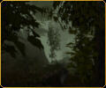
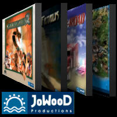
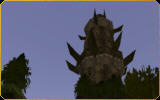
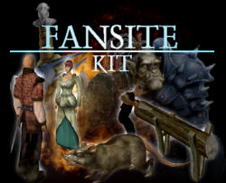
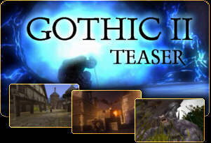

|
- latest publications -
| |
- developer diary -
| |
- just to let you know -
| |

 news archive
news archive
|
 New stuff New stuff
02-28-04: US release of gothic II
|
Obviously GOTHIC II has been released some time ago in the United States
as well as in the UK. But since Atari USA has not seen fit to confirm this to
us unofficially at the date of release (nor until today in fact...), we did
not spread the word in a timely manner. Sorry for that!
Anyway, you can order here!
01-11-04: lots of great ratings for gothic II
|
in the meantime, gothic II has been reviewed by quite a few online magazines. the overall ratings are fairly good with almost all of them above 80 percent. have a look:
to the 'previews & reviews'-section
06-13-03: distribution of the english version starting today
|
|
|
finally, shipping of the international versions has started. jowood's distribution partner atari (formerly infogrames) has announced that both uk and scandinavia are being supplied with english versions of gothic II from today.
the release dates for all the other countries will very likely be published here in just a few days.
|
order via this link:
04-24-03: international marketing agreement with Infogrames
|
our publisher jowood announced the conclusion of an exclusive agreement with infogrames for the international marketing of gothic II. with the exception of germany, austria and switzerland, the agreement covers the worldwide publishing, marketing and distribution of the title.
Thomas Kirchenkamp, Member of the Board at JoWooD, comments: "We are delighted that in Infogrames we have found a partner who, with their global presence is the ideal partner for the international sales and marketing of Gothic II."
Christian Gloe, SVP Europe at Infogrames: "With Gothic II, our products portfolio now includes one of the best role-play games on the market today. We would like to congratulate Piranha Bytes as well as JoWooD on the development of this superb title and are thrilled to be able to offer this must-have in the field of role-playing games to our fans all over the world."
04-04-03: the latest on the international versions
|
while the international community is still waiting for the unofficial release dates to be announced, our publisher jowood is searching for a distribution partner. according to jowood, the release dates will be made known shortly after the signing of the contracts.
both jowood and piranha bytes apologize for the delay. you can rest assured we'll publish the dates and any other important info here, on the unofficial website.
01-14-03: 3 new mp3s from the game
|
i've just uploaded some new pieces of music. here are the links:
to the 'music & soundfx'-section
01-08-03: there's something brewing...
|
Piranha Bytes wishes you all
the best and a happy new year!
last year, we piranhas completely
devoted ourselves to gothic II.
now - after a few weeks off -
i'm going to breathe some new
life into the website.
|
if you only knew what was in store for you...! another contest is coming up, giving you the chance to win excellent material which has never been published before. on top of that, we'll revamp the download area. make sure to drop by from time to time. :-)
see you later,
KaiRo
2002: older news (2002)
|
10-23-02: FLOOD OF NEW MATERIAL
|
the english voice recordings take place in london until the end of the month, so please don't bother me for not answering your emails :-)
- KaiRo -
09-16-02: contest: announcing the lucky winners
|
goodess me! i was about to leave, but then i remembered just in time to publish the winners' names. :-)
to the 'list of winners'
well then, i'm gone...
09-16-02: INTERMISSION...
|
|
|
Up to this day we tried to keep you up to date in terms of information and first-hand news. Gothic II nears completion, so we Piranhas will be unavailable for a few weeks.
I'll be in Frankfurt together with Mike (voice recordings), the rest of the team will hole up at the office and work feverishly to complete the final tasks.
|
What does it mean for you? Until Gothic II goes gold (~when the golden CD with the completed game will go to the press works) you won't find any updates at our unofficial homepage. Sorry, but if we want to finish the Gothic II production on time that's the only way. I hope you'll understand...
As soon as the goldmaster is done I'll keep you up to date again, promised. That will be only a few days before the game's release, anyway.
So... goodbye for now. See you next month!
- KaiRo -
09-13-02: closing time! gothic contest ended today
|
rien ne va plus. the gothic contest is over and from now on we'll have to ignore entries that shuffle in. participants should have a look at the following page to check the correctness of their answers:
to the 'after-contest-page'
09-13-02: caution! buildup of fog
|
programmer carsten has properly refurbished our engine's fog system, and we're proud to resent you three brand-new screenshots showing it's fantastic effect on the atmosphere. who wouldn't like to sneak trough that misty and dull forest with a crackling torch in his hand?
to the 'screenshot gallery'
|

|
09-07-02: new series: 'making of gothic II'
|
|
would you like to peek behind the scenes of gothic II? we welcome you to our new 'making of'-series. starting with an article written by sascha about 3d-modeling and texturing, we'll offer you an inside view on the development and show you how the world of gothic II comes to live.
to the 'making of gothic II'-section
|
08-30-02: GOTHIC CONTEST starting today!!!
|
the release date of gothic is still far away. to tide you over during a period of neverending boredom, we want to sweeten this waiting period for you with some nice pc games from our publisher JoWood.
to this end, we start a contest today, giving you the chance to prove your knowledge about gothic. the question is pretty tricky, and we hope not to find the correct answer in the forums sometime or other. :-)
alright, good luck to all contestants!
to the gothic contest
|

|
08-23-02: new! gothic II desktop wallpaper
|
many fansites have been offering very good fan-made wallpapers for quite some time now... so it was high time for us to follow suit! we published our first unofficial wallpaper today, and we'll create some more in the next weeks. be sure to check the 'artwork & funstuff'-section now and then.
to the 'media & artwork'-section
08-19-02: making-of-interview at 3Dfestival.com
|
|
|
the known and well-attended 3d graphics website 3dfestival.com features a "top story" about gothic II since today. among other things you can find some interesting 'behind the scenes'-images. it's definitely worth a look.
to the making-of-interview
|
08-15-02: dear diary...
|
you want an indepth look at what we are doing at the moment? well, this is top secret. i am actually writing it down into my diary, but my guess is, that it will never see the light of day.
(top secret link to the diary: click here)
08-15-02: downtime
|
after so many good news on this site it is time for some bad news today. i have to focus all my work on gothic II for a couple of days, if I want to finish in time. this means, that i have to let down the site temporarily. so this week, there'll be nothing new on the page (except this newsbit) and also next week may see a small update only. but after that, when i have done all my work for the next gothic II version, i will get back to the site at full strength and provide you with cool material.
i hope you all understand this short timeout.
until next week,
KaiRo
08-09-02: new panorama screenshot: xardas' tower
|
|

|
it is time again for some real eye-candy: from today on, you can take a deep look into the world with a new 360� shot. this time the camera was placed on the way to xardas' tower. if you watch carefully, you can even see a picturesque waterfall, a sheep and a skeleton.
to the 'screenshot-gallery'
|
08-02-02: new piece of music avaliable
|
get an earful of new audible material at the download section. the new track is a compilation of various in-game themes, therefore this potpourri is rather unobtrusive and quiet - background music mustn't distract the player.
to the 'music & sound fx'-section
07-26-02: exclusive developer thread in the RPGDot.com forum
|
we have just opened an own thread in the RPGDot.com forum . we will appear regularly in this thread for some days to answer your questions. the topic of the thread is predetermined though:
which are the main differences between gothic I and II?
if you want to take part, you should register in the forum as soon as possible. we are waiting for you :-)
to the developers' thread (ps: thanks a lot to rpgdot.com!)
07-19-02: new artwork: hero in his dragonslayer armor
|
the heavy dragonslayer armor just left the costume workshop, and our hero tried it on for you and patiently endured a foto session.
although he didn't really pose in a smart-looking way, you can have a look at his new armor over at the 'artwork & funstuff'-section.
to the 'artwork & funstuff'-section
|
|
07-19-02: portrait about game designer mike online
|
today we introduce to you another team member: game designer mike hoge. once again, the digital camera shot a funny pic of his mug :-)
to the 'portrait series'
07-05-02: new area: 'the team'
|
before we publish some new material about gothic II next week, our new section opens it's gates today: the team. this new area allows you to peek beind the scenes of the gothic II team.
one part of the new area is the 'piranha bits'. here you'll find some not so deadly serious newsbits about us, the freaks behind gothic II.
besides, we introduce ourselves in the 'portrait series', starting this week with game designer bj�rn.
to the 'piranha bits'
to the 'portrait series'
|
|
06-21-02: NEW! gothic II panorama screenshots
|
|
|
looking at screenshots may be nice, but how about being able to look around? you can't walk around in our new 360� panorama pics, but you can move your head freely!
you'll find the first two panorama screenshots over at the screenshot gallery.
to our 'screenshot gallery'
|
06-14-02: fansite kit ready for download
|
|

|
this brimful bundle goes to the webmasters of the numerous gothic I/II fansites. we have collected some material that you can freely use on your gothic-related website. with this, we want to thank your for your support and cooperation. enjoy defacing the images/mp3s/texts for your very own design. :-)
find the package in the 'artwork & fun stuff'-section.
|
06-10-02: gothic I received the highest user rating: 98%
|
when gothic I was released, it received an overwhelming large amount of great ratings by many game magazines, but the best ratings from all come from you, the passionate players. gothic received an incredible 98% and finds itself at the top of the reader charts of the german printmag GameStar. we don't need to mention that we appreciate this great ranking and hope that you like gothic II even more. there are still two percents to climb after all. :-)
go and see for yourself: GameStar usercharts (german)
hint for those who don't speak german: in the field 'Tabelle sortieren nach' (which means 'sort table by') select the entry 'User-Wertung' ('user-rating') and press 'abschicken' ('submit'). :-)
06-06-02: gothic II engine: interesting facts
|
our programmer Carsten Edenfeld made up a list of some engine renewals. the
gothic II engine is based on the first part's technology, but we submitted it to a general overhaul. besides an optimized performance, carsten added a bunch of new features. these are only some of them, we'll extend the list later.
- engine makes better use of hardware (environmental mapping, detail textures...)
- optional first person camera avaliable
- plants, leaves, rain and some other systems like the particle system react to wind.
- water and sky look far better due to a new system for both.
- the interface has been simplified, optimized mouse and joystick support. nevertheless the keyboard controls are still avaliable, 'though they're slightly changed.
... to be continued.
06-06-02: gothic II title theme online
|
although gothic II's title theme is not yet completed, you can now listen to a work in progress-version.
find the link in the ''music & sound fx'-section.
06-05-02: unofficial gothic II e3 teaser
|
|

|
From now on you can download the first gothic II teaser as promised. the 2 minutes of video contain some nice renderings and a camera ride through the world of gothic II.
check the download page for more infos and, of course, the link.
'demos & videos'
|
05-31-02: 6 new screenshots
|
We have just uploaded some new tasty tidbits in the form of six new screenshots.
visit the screenshot gallery.
How about some pictures in motion? You'll be able to download the unofficial E3 trailer video in just a few days (about 06-05-02). please be patient, it may take a while for our age-old 9600-modem to upload the file :-).
No, joke.
05-27-02: E3 award 'best fantasy RPG' for Gothic II
|
Yeah! The E3 is over, and lately RPGDot.com published the E3 award winners. Guess who was awarded 'best fantasy RPG'?! :-)
We appreciate this honor and thank the jury for their belief in us. If you want to know which excellent games won the other awards, have a quick look at the complete list:
E3 Awards
05-23-02: gothic II story revealed
|
if you finished gothic I, you already know some key elements of gothic II's plot. you have kicked the sleeper's musty-smelling ass and sent him back to the dimension he came from. the magical dome has been destroyed, but due to an earthquake caused by the bursting barrier, the orcish temple has caved in... with you inside...
but what exactly forms the setting of gothic II's epic story? we assure you that it'll be far more gripping and dense than the first part. to get an impression, just read the exclusive summary written by stefan kalveram and bjoern pankratz from the gothic II story department.
read gothic II story
05-23-02: game designers discuss the novel design features
|
michael hoge (game designer) and mattias filler (story author/scripter) put together a compilation of some new game features they consider important.
read designer's comment
05-23-02: unofficial gothic II page launched
|
finally our unofficial website has found its way into the internet, right on time for the e3. this page has been created by developers of the game exclusively, which means that you can rest assured - you will be supplied with information straight from the horse's mouth. although the development of gothic II doesn't leave much time for looking after the page, we hope that the page doesn't leave much to be desired. :-)
trust me, gothic II is worth looking forward to.
kai rosenkranz
music & sound artist, temporary webmaster
|
|
|
- random screenshot -
|
|
- gothic II forum -
|
|
we were thinking about offering an unofficial forum, but obviously the busy lizzies of our publisher JoWood and our supporters at RPGDot.com and world of gothic were much faster. since their community sections are very well-attended, we forego an unofficial forum and present you the links to their forum pages:
JoWood
rpgdot.com
WorldOfGothic (german)
|
|
|